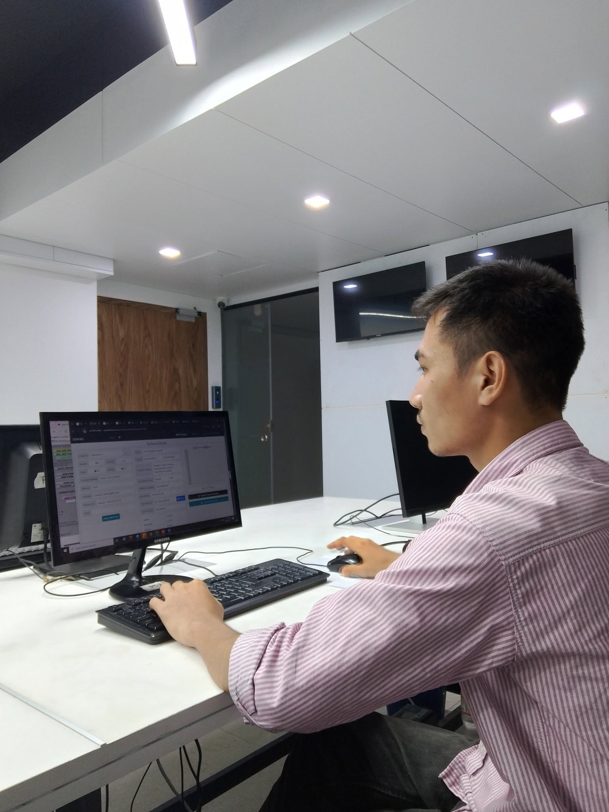

JUN 2026 — PRESENT
NOC Engineer
Digital Dot Net (DDN) · ISP

- Monitor network uptime and device health using NOC monitoring tools.
- Investigate network issues and coordinate with field teams and other providers.
- Configure and maintain routers and switches, and support planned maintenance.